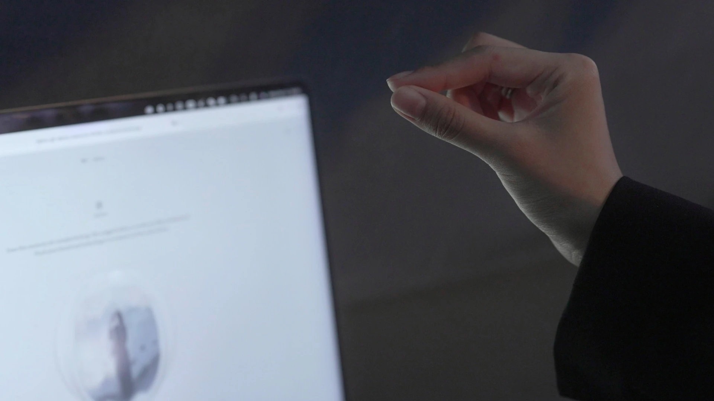
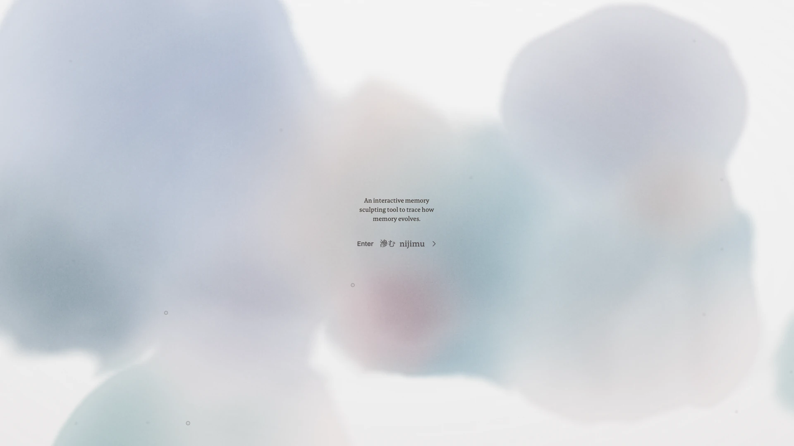
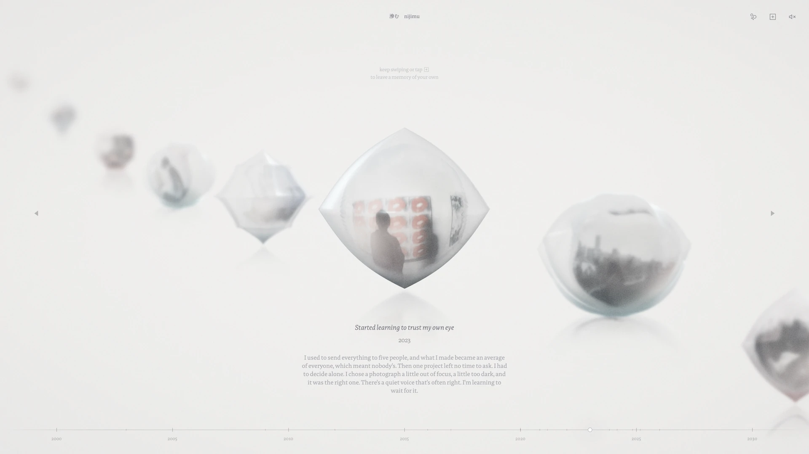
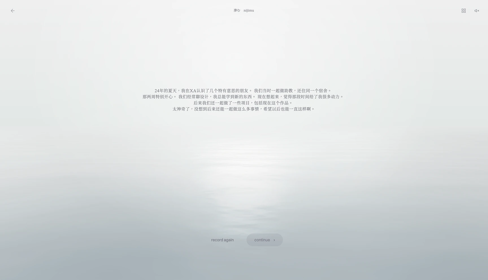
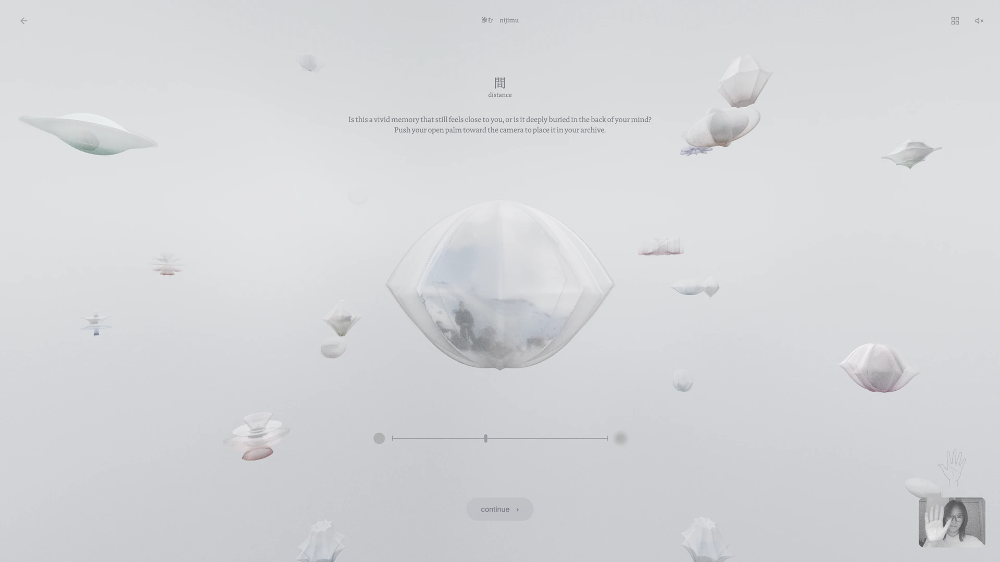
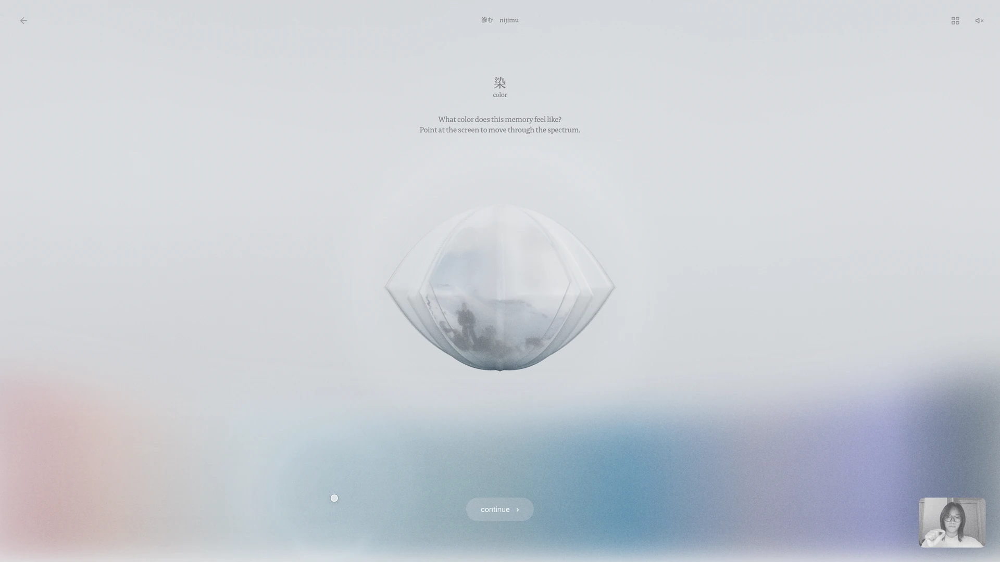
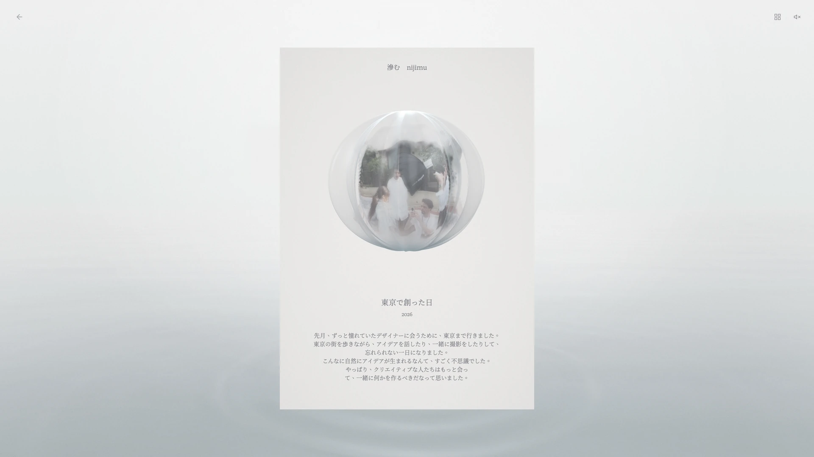

滲む nijimu
A speculative memory wellness tool that treats past experiences as something that dissolves into who you are becoming rather than something to archive or forget.
-
Role
Creative technologist, graphic designer, motion designer
-
Timeline
Feb 2026 - Nov 2026
-
Collaborators
Echo Zhou, Mavis Zhang, Yokis Bai
-
Tools
 Claude Code
Claude Code Codex
Codex Cursor
Cursor Figma Make
Figma Make -
Awards
Communication Arts 2027 Interactive Annual Award of Excellence (Student Work) Award360° 2026 Shortlisted Finalist (awaiting final round) Core77 Design Award Interaction Design Track Student 1st Place; Speculative Design Track Student Notable -
Website
Research question
How might we translate the unspoken textures of memory into a visual language that can be digitally sculpted?

Sculpting a memory artifact through hand gestures
Concept
「ゆく河の流れは絶えずして、しかももとの水にあらず。」
The river never ceases to flow, yet the water within it is never the same.
Memory has no form, yet it threads through synesthesia; we often describe a memory as "heavy," "distant," or "faded"—reflecting the immediate textures and sensations it imprints upon our bodies. nijimu (滲む, Japanese for "to blur, bleed, or seep into") is a visual experiment that brings these metaphors to life. Using an interactive web interface, it transforms memories once flattened into camera-roll thumbnails into sculptable, growing crystals powered by MediaPipe hand tracking and real-time rendering.
nijimu is rooted in Richard Shusterman’s somaesthetics: the mind and body are not mere vessels for experience, but a unified ground open to the unknown—inherently capable of receiving, integrating, and letting go of complex experiences.
Visitors speak a memory toward the water’s surface, and a language model interprets its semantic texture across multiple dimensions: solace, intensity, unease, fragmentation, and entanglement. Formless memory is mapped into twelve generative geometries derived from Gielis’s Superformula, though its final shape is sculpted by the body. As both palms slowly open, the memory grows outward from a sphere; the parting and closing of fingertips set its rhythm, like a fragmented ballad. Push your palms away into the distance, and the memory recedes into mist, its silhouette blurring within the archive; sweep your fingers across a spectrum to tint it with the color of what you felt.
Once confirmed, the form rises back to the surface through sunlight refracting down into the water. It is named, filed under a year, and released into a shared field of ripples made of every memory before it. Film development, fabric drape, glass refraction, and atmospheric bloom are all computed in real time through a custom R3F GPU rendering pipeline, carrying the entire journey—from voice recording to naming—in a single continuous take across the same body of water.
Even if forgetting is inevitable, nijimu offers a ritual for it: a way for memories to be faced again, laid to rest, and held in the palm of your hand to be quietly examined.

Iterations & visual development
Phase 1: From spoken memory to sculptable artifacts
The early prototypes explored how a spoken memory could become a tangible artifact. They pair archive navigation and voice transcription with real-time hand tracking, making language, gesture, and form parts of the same memory-making flow.
Traversing the memory archive
Transcribing memory into words
Sculpting memory artifacts as living three-dimensional form: real-time hand gesture tracking
Phase 2: Exploring water, ripples, and memory selection
These studies moved the archive toward a water-based environment, exploring how ripples, refraction, and soft light could evoke the fluidity of memory. A separate selector explored browsing sculpted artifacts along a timeline, connecting each form to the year of its memory.
Water surface and ripple shader study
Memory selector and timeline
Product highlights
nijimu site overview

Landing screen

Browsing memory artifacts along a timeline

Recording a memory above the pond

Placing a memory in the archive through hand gestures

Tinting a memory through the color spectrum

A memory card with its sculpted artifact, title, year, and story